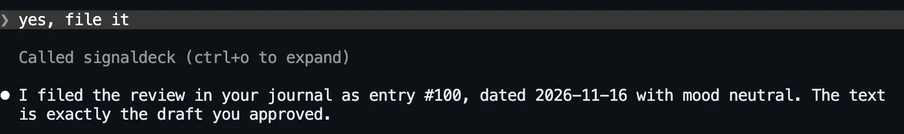

Why Monthly, and Why the Same Format Every Time
A holder’s mistakes are slow. A position drifts from 17% of the book to 23% without you buying a share (see concentration by drift). A price line you wrote at purchase gets crossed on a Friday night, and by Monday you have a reason to wait (see writing the sell rule first). No single day looks like a decision. A monthly review is the date on which those slow things get looked at on purpose.
The format matters more than the length. If every review has the same five sections, this month’s can be read against last month’s, and each review can end with a question that the next one has to answer. Fifteen minutes is a fair budget if something else does the gathering and the arithmetic. That is the part an assistant connected to your journal is good at, and the part you still need to spot-check.
The Prompt
Copy this into a new chat with SignalDeck connected. The words in brackets are SignalDeck’s tool names. The assistant would understand you without them, but naming them makes it far more likely to fetch the same data every month.
Run my monthly portfolio review from my SignalDeck account. Describe what happened; don't tell me what to buy or sell. Find my last monthly review in my journal (list_journal_entries). The review period runs from that date to today. Gather: - every open position (list_open_trades), and each one's purchase note (get_trade) - every trade closed during the period (list_trades, status CLOSED). Its date filter is the ENTRY date, so page through all closed trades and filter on exit date yourself. - my journal entries during the period (list_journal_entries) - my rules, in my strategy's notes (list_strategies) - each open position's close on the start date (get_price_bars) and its current price (get_price) Then write the review in exactly this format, short: 1. WHAT MOVED: the three biggest moves in dollars during the period, and realized P&L from sales. 2. CONCENTRATION: each position's share of the book (the market value of my open positions), largest first. Flag anything over my cap. Effective number of positions (1 / sum of squared weights). 3. RULE CHECK: for each position, did its WRONG IF fire during the period? If it did, what did I do and what did I write? For each sale, did it follow its note? 4. LAST MONTH'S QUESTION: what I asked, and what actually happened. 5. ONE QUESTION FOR NEXT MONTH. Show your numbers, and tell me if any list came back cut off. Then show me the journal entry you would file for today, mood neutral, and don't file it until I say yes.
Four lines in it do most of the work:
- “From that date to today.” The period runs from your last review, not a rolling 30 days, so last month’s review is always inside it and each review picks up where the previous one ended. Run it at the same time of day each month so the periods line up.
- “Page through all closed trades and filter on exit date yourself.” SignalDeck’s trade list filters dates on the entry date, and returns 50 trades at a time. A holder’s sales are of positions bought months or years ago, so without this line a month’s sales can drop out of the review. More on this below.
- “Show your numbers, and tell me if any list came back cut off.” An answer with its working shown can be checked in a minute. A bare total can’t.
- “Don’t file it until I say yes.” The review becomes a journal entry, and next month’s review reads it. You want the version you checked on file.
One gap the prompt leaves: SignalDeck returns at most 100 journal entries per request. If you write more than that in a month, add “ask for my journal a week at a time” to the prompt.
The prompt assumes two habits. Each purchase has a note with a WRONG IF line: the condition that means the reason you bought is gone. And your rules, including a cap on any one position, are written down where the assistant can read them, here in the strategy’s notes. If you use different headings, change the words in section 3 to match. If you have no written sell conditions, the rule check will have nothing to check, which is worth knowing too.
The Test Account
- A hypothetical holder, on real prices. Six stocks bought at the May 1, 2025 open (NVDA, MSFT, LLY, COST, JPM, V) and three coins bought at the September 1, 2026 open (BTC, ETH, SOL), each at that day’s real opening price. Every purchase has a note with WHY, WRONG IF and BY WHEN lines. The stock notes have a business condition and a price line; the coin notes have a price line only. No line was crossed before the month under review.
- The holder’s rules, in the strategy notes: a WRONG IF price is a daily close (for crypto, the 00:00 UTC close, which is 7 p.m. in New York in November); if it prints, sell at the next open, whatever the story. No position above 20% of the book, meaning the market value of open positions; at each monthly review, trim anything over 20% back to 15%. Reviews started in October 2026.
- The month, October 16 to November 16, 2026. V reached the 420 limit in its note for the first time on November 2 and was sold there. SOL closed under its 90 line on November 5 and was sold at the next daily open (modeled at that bar’s opening price). BTC closed under its 70,000 line on November 13 and was not sold; that evening’s journal entry says why. NVDA fell 27%.
- Last month’s review, filed October 16 in the same five sections, said NVDA was 24% of the book and wasn’t trimmed, and ended with this question: “BTC is about 16% above its 70,000 line. If it closes under, do I sell at the next open like the note says, or do I find a reason?” We wrote that entry, and the other four journal entries, for this test.
- The assistant is Claude Code (Claude Opus 5.5), run at about 7:20 a.m. ET on November 16, 2026, before the US market opened. So “now” for the stocks means pre-market quotes, and for the coins, that minute’s price. It was connected with a token that can read and write but not delete. SignalDeck’s read tools were pre-allowed and its write tools were not, so Claude Code asked before the write. Web, file and shell tools were off.
What Came Back
The prompt was pasted in as written. The assistant made 29 read calls: the journal, the positions and all nine purchase notes, the closed trades, the strategy, prices and daily bars. It went back for two extra sets of bars on its own, to check the two sales against their notes. In under two minutes it returned the review. It began by stating the period and answering the “cut off” question, list by list.
![Claude Code: Monthly review, Oct 16 to Nov 16, 2026. Period: the last review was filed on 2026-10-16 (journal 95), so this one covers Oct 16 to today. Start means the Oct 16 close, the 00:00 UTC close for crypto; now is the live get_price; the last stock bar is Friday Nov 13 and today's crypto bar is still open. Were any lists cut off? No: open trades 7 of 7, closed trades 2 of 2, both exited in the period, journal 5 of 5; the price bars say truncated true only because they stopped at the number of bars requested. Data caveat: every journal entry and the strategy record show an updated or created time of today at 12:20, which looks like a bulk import; the trade notes' own timestamps are intact. 1. WHAT MOVED, start to now and dollar move: NVDA 168 shares, 214.13 to 156.65, minus 9,656.64; LLY 20, 1,257.03 to 1,456.57, plus 3,990.80; BTC 0.15, 81,500.04 to 63,910.90, minus 2,638.37; ETH 3, minus 1,885.92; COST 15, plus 1,847.85; SOL sold, 40, 104.32 to the 89.21 exit, minus 604.40; V sold, 26, 402.61 to the 420.00 exit, plus 452.14; JPM plus 318.50; MSFT minus 215.20. Realized P&L from sales: V plus 1,934.92 and SOL minus 556.00, net plus 1,378.92, measured from each entry date. Period total minus 8,391.24 across all nine names, or minus 8,238.98 on the seven still open.](../../assets/screenshot-monthlyreview-review-moved.webp)
Two things here are worth noticing before the numbers. It separated the period’s moves (from the October 16 close) from realized P&L (the profit or loss a sale locked in, measured from each purchase), which are different questions and easy to blur. And it flagged something we hadn’t asked about: the journal entries had all been updated on the same morning, “which looks like a bulk import.” It was right. We created them for this test that morning, backdated to the days they describe. An assistant that tells you when the records themselves look odd is worth more than one that doesn’t.
NVDA’s fall is the month: 168 shares from 214.13 to about 157 is −$9,657, more than everything else put together. The two sales came out where their notes said they would. Taking one unit of risk (1R) as the gap between the purchase price and the WRONG IF line, times the quantity held, V made +0.98R at its target and SOL lost −1.06R at its line.
![2. CONCENTRATION. The book is 125,005.16 dollars in market value. Share of book: LLY 23.3%, over the 20% cap; NVDA 21.1%, over the 20% cap; MSFT 16.8%; JPM 13.6%; COST 13.3%; BTC 7.7%; ETH 4.3%. Effective number of positions 1 divided by 0.1707 equals 5.86. The strategy notes say to trim anything over 20% back to 15% at the monthly review; last month NVDA was at 24% and wasn't trimmed. 3. RULE CHECK. BTC: the WRONG IF fired. The first close under 70,000 was Nov 13 at 68,324; the close before was 71,370.70. The next open was 68,237.40 and it wasn't sold. It also closed under the line on Nov 14 (64,118.79) and Nov 15 (65,315.35). It's at 63,910.90 now, minus 648.98 dollars compared with selling at that open. On Nov 13 you wrote: Everyone is calling it capitulation and funding is negative. Selling the bottom is how you lose. Giving it until the end of the month. The other price lines did not fire: a table of lowest close in the period against each line, ETH 1,768.41 against 1,600, NVDA 162.85 against 85, LLY 1,240.34 against 600, MSFT 507.12 against 330, JPM 331.58 against 190, COST 982.73 against 800. It couldn't check the business-condition parts of the WRONG IF lines from SignalDeck data. Both sales followed their notes: SOL first closed under 90 on Nov 5 at 89.20 and sold at the next open, 89.21, one minute after the UTC close; V's 420 limit filled on Nov 2, the first day V traded at 420, the high before that being 417 on Oct 30.](../../assets/screenshot-monthlyreview-review-rules.webp)
Three things in this part are worth more than the numbers:
- It found NVDA over the cap at both reviews. NVDA was 24% at the October review, and that entry says “did not trim, it is the best idea I have.” Today it is still over 20% even after losing more than a quarter of its value, and LLY has joined it. That is measured against open positions, as the rules define the book. Count the cash from the two sales as well and LLY is about 21% and NVDA about 19%, so how you define the book matters, and it is worth writing down.
- It put the BTC note and the BTC journal entry side by side. The note says sell at the next open, whatever the story. The journal gives a story and a deadline that appears nowhere in the note. The assistant quoted both and measured the cost of waiting so far: another $649 since the open it should have sold at. It didn’t say what to do. In R terms, selling at that open would have realized about −1.21R (a daily-close rule can’t promise a fill at the line itself); the position now stands at about −1.71R.
- It said what it couldn’t check. Each stock note also has a business condition: capex guidance, Azure growth, the renewal rate and so on. Those depend on company reports, which aren’t in a trading journal, so it said so instead of guessing. Checking those lines each quarter is still your job.
It also checked the two sales the way a skeptical reader would: SOL’s sale came at the open right after the UTC close that crossed its line, and V’s limit filled on the first day V had traded at 420 since it was bought, with the prior high at 417. A sale that “followed its note” only counts if the note’s condition hadn’t been met earlier.
![4. LAST MONTH'S QUESTION. You asked: If BTC closes under 70,000, do I sell at the next open like the note says, or do I find a reason? It closed under on Nov 13. You didn't sell. Instead you wrote a reason and set a new deadline of the end of the month. Eight days earlier, SOL hit its line and you sold at the open. 5. ONE QUESTION FOR NEXT MONTH. You set yourself an end-of-month deadline for BTC. If it's still under 70,000 on Nov 30, will that deadline hold, or will it move again? Then a proposed journal entry, not filed, dated 2026-11-16, mood neutral, summarising all five sections, ending: Reply yes and I'll file it.](../../assets/screenshot-monthlyreview-review-draft.webp)
This is why the review ends with a question. A month ago the holder asked, in writing, whether they would follow the BTC line or find a reason. This month the answer is on file: they found a reason, eight days after following the SOL line without one. Without last month’s entry, the BTC decision would read as a judgement call. With it, it reads as the exact thing the holder was worried about. The new question gives that reason a date to be tested against: November 30.
Check It Before You File It
We checked every figure in this run against the account and the price data: the nine dollar moves and their totals, the book value, the seven weights, the effective number of positions (5.86, roughly the concentration of six equal holdings), the realized P&L, every lowest close and line, the BTC and SOL closes and opens, the cost of waiting on BTC, and V’s first touch of 420. All of them were right.
That is not guaranteed. In an earlier test run, with an earlier version of this prompt and a first version of this demo account, the assistant’s seven position rows were right but the total under them was $440 off, and the wrong total went into the journal entry it filed. A neutral follow-up, without saying what was wrong, found and fixed it:
“before I rely on this: recheck the numbers in the entry you just filed against my data, and tell me if anything is wrong. if it is, show me the fix before changing anything”
It found the bad sum, showed the corrected arithmetic, proposed the corrected line, and edited the entry in place after approval. It did not catch a smaller mislabelled figure in its chat table, which wasn’t in the entry. Two habits cover most of the risk: ask it to show its numbers, and before you say yes, check the one or two figures you would actually act on. Here that means the weights and the BTC line.
The Number a Holder’s Dashboard Won’t Show
This applies whether or not you use an assistant. SignalDeck’s dashboard date ranges (7, 30 and 90 days, one year) select trades by when they were opened. For a swing trader that is nearly the same as when they were closed. For a holder it isn’t: this account sold two positions in the month, and its 30-day stats show zero trades, because both were bought months earlier. The sales are in the trade list, with their realized P&L; they just fall outside a window that starts from the purchase date.
So for a holder’s month, read realized results from closed trades by exit date, which is what the prompt asks for, and use the all-time stats for anything cumulative. The trade list’s own date filter also works on the entry date, which is why the prompt tells the assistant to page through closed trades and filter exits itself. In this run it did, and it reported 2 of 2 closed trades returned.
Filing It
The review exists to be read next month, so it goes in the journal. After “yes, file it”, Claude Code showed its own permission prompt with the exact text, date and mood before the write. That prompt comes from the chat app, not from SignalDeck, so claude.ai, Claude Desktop and ChatGPT each handle it in their own way, and a setting can switch it off. SignalDeck’s write tools also tell the assistant to show the text and get your confirmation first, but the server can’t enforce that, which is why the prompt asks for it in words.
![Claude Code asking permission to use the signaldeck Add Journal Entry tool with entry_date 2026-11-16, mood neutral, and the full review as content: MONTHLY REVIEW (Oct 16 - Nov 16), WHAT MOVED, CONCENTRATION, RULE CHECK, LAST MONTH'S QUESTION and QUESTION FOR NEXT MONTH. The tool description begins: WRITES a new daily journal entry to the user's SignalDeck account. Show the user the exact text (and date/mood) and get their explicit confirmation. Options: 1. Yes, 2. Yes, and don't ask again, 3. No.](../../assets/screenshot-monthlyreview-permission.webp)

Here it is on the Journal screen, next to the BTC and SOL entries it was built from. Last month’s review is further down the same screen, which is where next month’s review will find it.
![SignalDeck's Journal screen, All Notes. The newest card, 2026-11-16 Neutral, holds the monthly review: NVDA minus 9,657, LLY plus 3,991, BTC minus 2,638; realized V plus 1,934.92, SOL minus 556.00; LLY 23.3% and NVDA 21.1% over the 20% cap of a 125,005 dollar book; BTC's WRONG IF fired and it was not sold; the question for next month about the Nov 30 deadline. Beside it: 2026-11-13 Bad, BTC closed at 68,324 tonight, under the 70k line, giving it until the end of the month; and 2026-11-05 Bad, SOL closed at 89.20 at the UTC close tonight, under 90, sold at the open, as the rule says.](../../assets/screenshot-monthlyreview-app-journal.webp)
Making It a Habit
- Pick a day and keep it. The holder here reviews on the 16th, and it is written into the rules. The prompt measures from the last review, so a late month doesn’t leave a gap.
- Run it before the open, or after the close. During market hours stock prices move while you read. This run used pre-market quotes for stocks, which is fine for a review, and worth knowing if you compare it with a statement priced at the close.
- Keep the prompt the same. Change it when your rules change, not when you’re curious. Ask follow-up questions in the same chat after the review is filed.
- Read section 3 first. What moved is mostly the market. Whether you did what you wrote down is the part you control.
- Answer last month’s question honestly, even if the answer is “I found a reason.” That sentence in your own journal is worth more than any number in the review.
For one-off questions between reviews, see 20 questions to ask your trading journal. For the day-to-day entries a monthly review reads back, see journaling by chat.
What It Reads, What It Writes
- Reads: open and closed trades, each trade’s notes, journal entries, strategies and their notes, and current and historical prices.
- Writes, if you allow it: this review needs one write, a journal entry, plus an edit if you correct it. Writes count toward a per-user hourly budget, currently 120 an hour.
- Doesn’t see: your cash balance unless you record it, anything outside SignalDeck such as company filings, and anyone else’s account.
- No deleting by default: removing an entry needs a separate delete permission that is off unless you opt in when you connect.
To set up a connection, see connecting Claude or ChatGPT to your trading journal or the AI assistant page. The connection is included on every plan, including Free. To get a book like this one in, see the stock and crypto journal pages.
The account is a hypothetical demo, not anyone’s real portfolio, and nothing here is a recommendation to buy or sell anything. Purchase prices and SOL’s sale price are real Polygon daily opens (crypto bars are 00:00 UTC days; SOL’s fill is modeled at its bar’s opening price); V’s sale is a hypothetical limit fill at 420 on the first day V’s range reached it; period start values are real October 16, 2026 closes. Prices were retrieved November 16, 2026. Current prices are the live quotes SignalDeck returned at about 7:20 a.m. ET on November 16, 2026, pre-market for the stocks. The trades, notes, strategy and journal entries, including last month’s review, were created for this test the same morning. Answers were produced by Claude Code with Claude Opus 5.5 against a SignalDeck demo account on the current release, with the hourly write limit at SignalDeck’s current 120 writes an hour. The earlier test run quoted in “Check It Before You File It” used a first version of this account, rebuilt because some of its seeded price lines had been crossed before the review month. Screenshots are unedited apart from cropping, and on the Journal screen the time stamps on the cards are hidden. ChatGPT reaches the same tools through the same connector, but it wasn’t tested for this post and its answers will differ. The journal write was checked in the database, and every figure in the answer was checked against the trades and the price data.
FAQ
What should a monthly portfolio review include?
Five things, in the same order every month: what moved in dollars, plus any realized gains or losses from sales; each position’s share of the book, checked against your own cap; whether any sell condition you wrote at purchase fired, and what you did about it; the question you asked yourself at the last review and what actually happened; and one question to carry into the next. A fixed format matters more than a long one, because the value is in comparing one month with the next.
Can ChatGPT or Claude run a monthly portfolio review?
Yes, if it can read your holdings. Connected to SignalDeck, Claude or ChatGPT can read your open positions, the notes you wrote when you bought, your journal, your closed trades and current and historical prices, then write the review and file it as a journal entry. We tested the prompt in this post with Claude Code on November 16, 2026. ChatGPT reaches the same tools through the same connector, but we did not test it and its answers will differ.
Will the AI tell me what to buy or sell?
The prompt in this post tells it not to, and in our run it didn’t. It reported what the account’s own written rules said and what was actually done, for example that a sell condition fired and the position was not sold, without recommending a trade. Whether to act on a broken rule is your decision.
Why do 30-day stats show no trades for a long-term holder?
SignalDeck’s dashboard date ranges select trades by entry date, so 30-day stats only count positions opened in the last 30 days. A holder who sells a position bought last year sees that sale in the trade list, not in 30-day stats. The prompt in this post avoids the problem by paging through closed trades and filtering on the exit date.
How long does an AI-run monthly review take?
In our test the assistant gathered the data (29 read calls) and wrote the review in under two minutes. Budget about 15 minutes in all, so there is time to read it and check the figures you would act on before you approve the journal entry. Don’t skip the check: in an earlier test run, one total was wrong.
Related Articles
Write the Sell Rule First
The three lines to write at purchase, and how theses drift.
Portfolio Concentration Risk
Nobody chose 38%: effective positions and trim rules.
20 Questions to Ask Your Trading Journal
Real answers from an AI assistant, checked.
The Trading Journal You’ll Actually Keep
Logging notes and journal entries by chat.
Connect Claude or ChatGPT to Your Journal
What the assistant can read, write, and never touch.
Crypto Trading Journal
What to track when the market never closes.
Review the month in fifteen minutes
Import your stocks and crypto, write the sell rule when you buy, and let Claude or ChatGPT gather the month for you. The prompt asks for your approval before anything is filed. Free during beta; Pro is $30/mo and Elite $50/mo when billing launches.